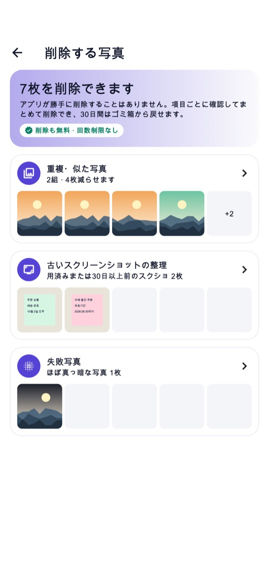

重複写真を削除する方法
1. 削除する写真はこう集まります
写真タブの「削除する写真」で、整理する写真を3種類に分けて表示します。
• 重複・似た写真:同じ写真や連続で撮った似た写真
• 古いスクリーンショット:30日を過ぎたもの。レシート・口座・パスワードが写っているものは選びません。
• 失敗写真:誤って撮れたほぼ真っ暗な写真

2. 削除のしかた
1. 各組で一番よい1枚を残し、残りをあらかじめ選んでおきます。
2. 写真を押すと大きく見られ、残す写真を変えられます。
3. 確認したら「○枚を削除」を押します。
3. 間違えて削除しても大丈夫
削除した写真はスマホの「最近削除した項目」から30日間元に戻せます。元に戻せない端末では、削除の前にアプリがお知らせします。